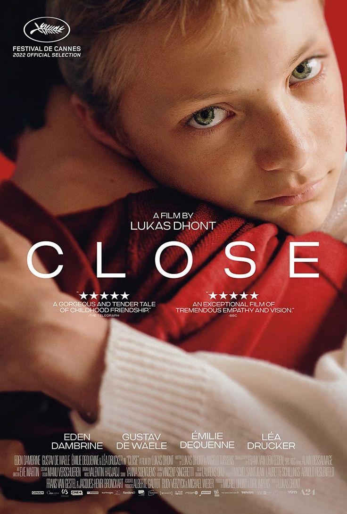

I Killed My Mother

This movie was directed by Xavier Dolan, who also directed "Mommy" in 2014.
Close
Directed by Lukas Dhont, this film is a powerful story about friendship and adolescence.
Better Days

Directed by Derek Tsang, "Better Days" portrays the struggles of youth, bullying, and justice.